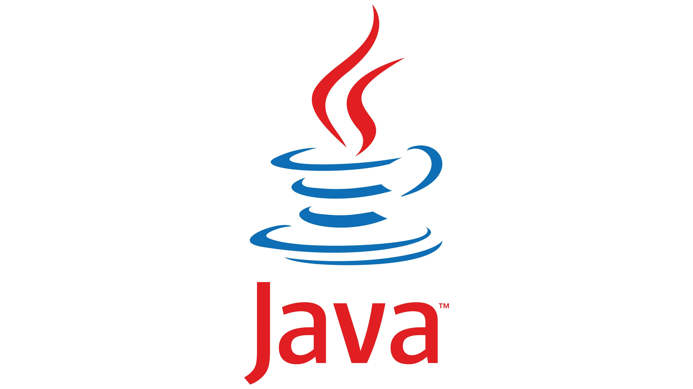
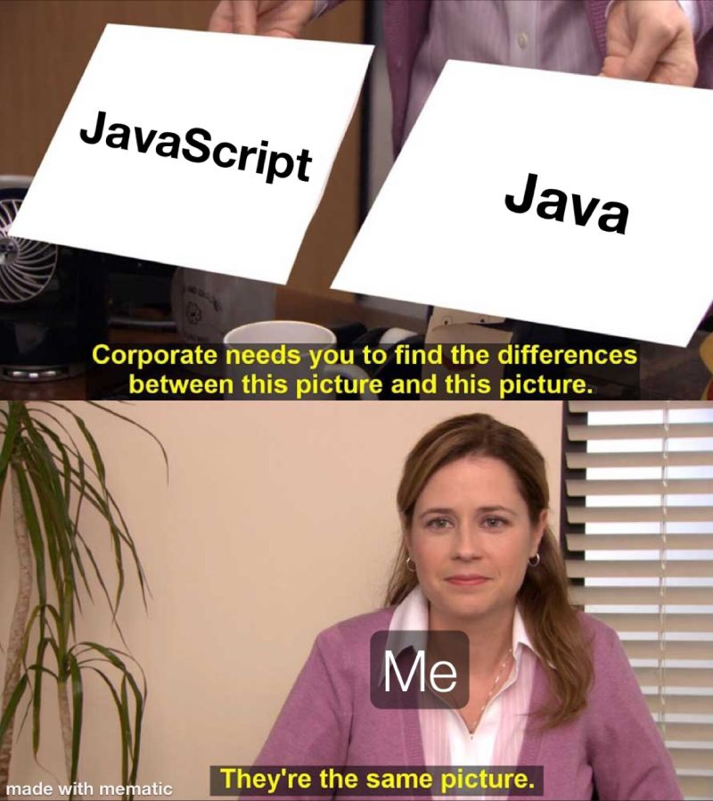
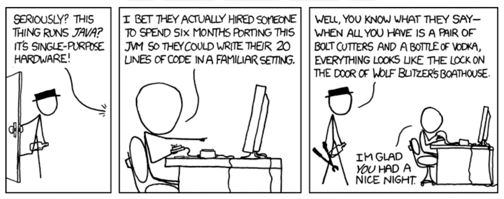
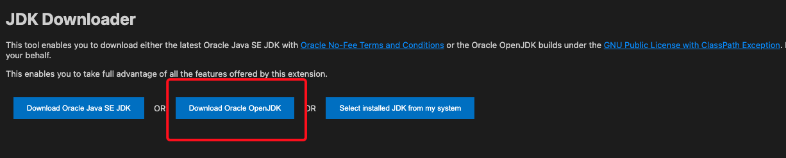
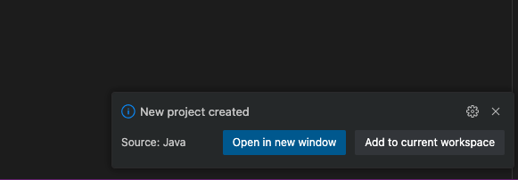

Programming in Java: A project Oriented Approach

Instructor: Ashish Thapa
Expected Time : 16 hours
This is official mdbook for the proposed programming workshop for the Java. Here you will find the written guides for the workshop. Following is the course structure for the workshop. Please note that this is subject to change as the workshop starts.
Assignments
Each session after the first session will be coupled with assignments with a laid out project with certain missing functions that has to be implemented.If the function is implemented correctly then it passes the unit test which marks the completion of assignment.
What to expect from the workshop
The students will be able to
- Where Java is used in the industry and what are some popular java projects and career prospects with Java
- understand the fundamentals of Java
- How to program with a project oriented approach
- [Exploration] Understanding how a java projects are typically structured and understand the concept of
- Testing and Code coverage
- Linting
- formatting
- [Project] Understand Networking Libraries in Java, understand how a barebones HTTP server works
- [Project] Understand Various HTTP methods, and have a base to implement their own REST API without using any framework or library.
What not to expect from the workshop
- Mastery of Java : Java is vast and complex language that has existed since 1995. 16hrs workshop won't be able to cover everything
- Extensive Hands on experience: Covering a lot of things require skimming over certain portion which will require efforts from students side. I will try to close that gap with assignments but a workshop is simply a nudge which requires a lot of effort from the students side. Each Session will be coupled with lots of resources students will have to explore themselves, but there won't be much of hands on experience on the workshop itself.
- Won't guarantee a java developer Job
Session 0: Programming and Java
- The essence of programming
- How to learn any technologies
- Project Oriented Learning
- Introduction to Java, JVM and OpenJDK
- Setting up the VSCode editor for Java (installing Extensions, debuggers)
- Is Java Dead? Who uses java and Why are there so many jobs in javascript?
Session 1: Setting up the Environment
- Introduction to Git and setting up the environment
- Walkthrough on how to do assignments
- Running the simple Hello world program, introduction to Java testing
Session 2: Proper Introduction To Java
- significance of Object Oriented Programming
- Java Basics
- variables
- primitive and User defined data types
- Operators
- Control Flow statement, Loops
- [Project] Introduction to Networking, Wireshark
Session 3: Object Oriented Programming
- Classes, Overloading Methods and Constructors
- Objects and References
- Java Testing in depth
- Java Build pipeline and Project Structure
- [Project] Setting up a simple project in Java and exploring Java Networking Libraries
Session 4: Exception Handling, Interfaces and Inheritance
- Exception Handling Mechanisms
- Class Inheritance, Interface and Runtime polymorphism
- [Project] Implement the
accept()method to create incoming connections
Session 5: Project Deep Dive (already built Ecommerce Spring Web application)
- Introduction to building application with spring boot
- Brief about Dockerfiles and CI/CD
- How to read github README and start experimenting with the project
Session 6: Completing the HTTP Server
- [Project] Understanding what RFCs are and how to read RFCs, understanding HTTP methods and handling them
Session 7: Design Patterns
- Introduction to Design Patterns
- [Project] Creating a basic HTTP router and creating a simple API with our HTTP server we built from scratch
Resources
-
Java Programming Challenges:
- LeetCode: Practice and improve coding skills with Java challenges.
- HackerRank: Offers a "10 Days of Java" challenge series.
-
Java Resources:
- Awesome Java: A curated list of awesome Java frameworks, libraries, and software.
- Java Design Patterns: Learn about design patterns and see practical implementations in Java.
Java Editors and IDEs
- IntelliJ IDEA: A powerful IDE with intelligent coding assistance and advanced debugging features.
- Eclipse IDE: A popular open-source IDE with a robust plugin ecosystem.
- Apache NetBeans: Another open-source IDE known for its ease of use and comprehensive features.
- Visual Studio Code: A lightweight, open-source editor with a wide range of extensions for Java development.
Additional Resources
- Reddit: r/Java: A community for Java enthusiasts to share news, tutorials, and discuss topics.
- Java Off-Heap: A podcast discussing Java and JVM-related topics.
- YouTube: Java Brains: A channel offering detailed Java tutorials and courses.
Books and Online Courses:
- Books:
- "Effective Java" by Joshua Bloch: Essential tips and best practices for Java developers.
- "Head First Java" by Kathy Sierra and Bert Bates: A fun and engaging introduction to Java.
Why Java
Why Learn Java? A Compelling Case for New Programmers
Among the Top 10 Most Used Programming Language
Java consistently ranks among the top 10 most used programming languages worldwide, alongside others like Python, JavaScript, C++, and C#. This widespread usage is a testament to its versatility, robustness, and enduring relevance in the software development industry.
Key Reasons to Learn Java
1. Write Once, Run Anywhere
Java's motto, "write once, run anywhere," highlights its platform independence. Thanks to the Java Virtual Machine (JVM), Java programs can run on any device or operating system without modification. This capability makes Java a preferred choice for cross-platform development, ensuring that your code remains functional and efficient across different environments.
2. Sustained Demand Due to Production Use
Once a popular language like Java is adopted in production environments, it guarantees a sustained demand for developers skilled in that language. Many large-scale enterprise applications, legacy systems, and critical infrastructure are built using Java. As a result, companies continually seek Java developers to maintain, enhance, and scale these systems, providing long-term job security and career opportunities.
3. Object-Oriented Programming (OOP)
Java is a pure object-oriented programming language, which means it follows the OOP paradigm strictly. OOP concepts like inheritance, encapsulation, polymorphism, and abstraction make it easier to manage complex codebases, promote code reuse, and improve maintainability. Learning Java helps you master these fundamental programming principles, which are transferable to other OOP languages like C++, C#, and Python.
4. Ease of Learning
Java's syntax is straightforward and closely resembles English, making it relatively easy for beginners to learn and understand. The language is well-structured, with a clear and consistent syntax, which helps new programmers grasp programming concepts quickly. Additionally, Java has comprehensive documentation and abundant learning resources, including tutorials, online courses, and books.
5. Compiled Language
Java is a compiled language, which means your code is converted into bytecode by the Java compiler before it is executed by the JVM. This compilation process enhances performance and ensures early detection of errors, leading to more reliable and efficient applications. Compiled languages like Java are known for their speed and efficiency compared to interpreted languages.
6. Large Community and Ecosystem
Java has one of the largest and most active developer communities. This extensive community support translates into numerous open-source libraries, frameworks, and tools that simplify development and extend Java's functionality. Popular frameworks like Spring, Hibernate, and Apache Struts are widely used in the industry, enhancing your productivity and allowing you to build complex applications more efficiently.
7. Financial Incentives
Java developers are among the highest-paid in the industry due to the language's extensive use in enterprise environments and the critical nature of Java-based applications. The demand for Java developers remains robust, ensuring competitive salaries and numerous job opportunities across various sectors, including finance, healthcare, e-commerce, and technology.
Getting Started with Basics in Java and Programming
1. Coder vs Programmer
Coder: This term often refers to someone who writes code. Coders may have a basic understanding of programming languages and write simple scripts or small programs.
Programmer: A programmer is someone with a deeper understanding of programming concepts, algorithms, and software development. Programmers often design, develop, and maintain complex applications and systems.
2. Source Code, Program, Script: What's the Difference?
Source Code: This is the human-readable set of instructions written in a programming language. It needs to be compiled or interpreted to run on a computer.
Program: A program is an executable piece of software that performs a specific task or set of tasks. It is created from source code through a process of compilation or interpretation. Not human readable
Script: A script is a type of program written in an interpreted language. Scripts are usually simpler and smaller than full programs and are often used for automating tasks.
3. IDE vs Editor
IDE (Integrated Development Environment): An IDE is a comprehensive software suite that provides tools for software development. It typically includes a code editor, compiler/interpreter, debugger, and other features like code completion and version control integration. Examples: IntelliJ IDEA, Eclipse, NetBeans.
Editor: A code editor is a text editor specifically designed for writing and editing code. It may offer syntax highlighting and basic code completion but lacks the extensive tools provided by an IDE. Examples: Visual Studio Code, Sublime Text, Notepad++.
4. Compiled vs Interpreted Language
Compiled Language: In a compiled language, the source code is translated into machine code by a compiler before it is executed. The resulting executable file can be run directly by the computer's hardware. Examples: C, C++.
Interpreted Language: In an interpreted language, the source code is executed directly by an interpreter, which reads and executes the code line by line at runtime. Examples: Python, JavaScript.
5. What a Virtual Machine Is?
Virtual Machine (VM): A virtual machine is a software emulation of a physical computer. It runs an operating system and applications just like a physical machine but is isolated from the underlying hardware. VMs are used for running applications in a platform-independent manner, providing security, and testing different environments.
Java Virtual Machine (JVM): In the context of Java, the JVM is a virtual machine that allows Java programs to run on any device or operating system. The JVM interprets Java bytecode (compiled Java source code) and executes it, providing platform independence.
6. Additional Concepts for Java Beginners
Class and Object: Java is an object-oriented programming (OOP) language. A class is a blueprint for creating objects (instances), which are concrete instances of the class.
Method: A method is a block of code within a class that performs a specific task. Methods define the behavior of objects.
Inheritance: This OOP concept allows a new class (subclass) to inherit properties and methods from an existing class (superclass), promoting code reuse.
Interface: An interface is a reference type in Java that is similar to a class but only contains abstract methods (methods without a body). Classes can implement interfaces, providing the specific behavior.
Exception Handling: Java provides a robust mechanism for handling runtime errors through exceptions. Exceptions are objects representing an error condition, and they can be caught and handled using try-catch blocks.
Garbage Collection: Java automatically manages memory allocation and deallocation through garbage collection, which frees up memory used by objects that are no longer in use.
Packages: Packages are used to group related classes and interfaces, providing modularity and namespace management. Java's standard library is organized into packages.
Workshop Notes
- ask difference between error, warning and exceptions?
Object-Oriented Programming (OOP) is a programming paradigm based on the concept of objects, which can contain data and code: data in the form of fields (often known as attributes or properties), and code in the form of procedures (often known as methods). OOP focuses on the creation of reusable code and solving problems by modeling real-world entities. The four fundamental principles of OOP are encapsulation, inheritance, polymorphism, and abstraction.
1. Encapsulation
Definition: Encapsulation is the mechanism of restricting access to certain details of an object and exposing only the necessary parts. This is often achieved using access modifiers (private, protected, public) and by providing public getter and setter methods to access private fields.
Benefits:
- Protects the internal state of an object from unintended modification.
- Improves modularity and maintainability.
- Allows for controlled access to the properties of an object.
Example:
public class Person {
private String name;
private int age;
public String getName() {
return name;
}
public void setName(String name) {
this.name = name;
}
public int getAge() {
return age;
}
public void setAge(int age) {
this.age = age;
}
}
2. Inheritance
Definition: Inheritance is the mechanism by which one class (the subclass or derived class) inherits the attributes and methods of another class (the superclass or base class). This allows for code reuse and the creation of a hierarchical relationship between classes.
Benefits:
- Promotes code reuse.
- Establishes a natural hierarchy.
- Enhances maintainability and scalability.
Example:
public class Animal {
public void eat() {
System.out.println("This animal eats food.");
}
}
public class Dog extends Animal {
public void bark() {
System.out.println("The dog barks.");
}
}
3. Polymorphism
Definition: Polymorphism allows objects of different classes to be treated as objects of a common superclass. It is achieved through method overriding (runtime polymorphism) and method overloading (compile-time polymorphism).
Benefits:
- Enhances flexibility and integration.
- Simplifies code by allowing one interface to be used for a general class of actions.
- Promotes the design of extensible systems.
Example:
public class Animal {
public void makeSound() {
System.out.println("This animal makes a sound.");
}
}
public class Dog extends Animal {
@Override
public void makeSound() {
System.out.println("The dog barks.");
}
}
public class Cat extends Animal {
@Override
public void makeSound() {
System.out.println("The cat meows.");
}
}
public class Main {
public static void main(String[] args) {
Animal myDog = new Dog();
Animal myCat = new Cat();
myDog.makeSound();
myCat.makeSound();
}
}
4. Abstraction
Definition: Abstraction is the concept of hiding the complex implementation details and showing only the essential features of an object. It helps in reducing programming complexity and effort.
Benefits:
- Simplifies the complexity of software development.
- Enhances code readability and maintainability.
- Focuses on what an object does instead of how it does it.
Example:
abstract class Animal {
public abstract void makeSound();
public void sleep() {
System.out.println("This animal is sleeping.");
}
}
public class Dog extends Animal {
@Override
public void makeSound() {
System.out.println("The dog barks.");
}
}
public class Main {
public static void main(String[] args) {
Animal myDog = new Dog();
myDog.makeSound();
myDog.sleep();
}
}
Additional OOP Concepts
1. Classes and Objects:
- Class: A blueprint for creating objects. It defines a datatype by bundling data and methods that work on the data.
- Object: An instance of a class. It has a state and behavior defined by the class.
2. Method Overloading:
- Allows a class to have more than one method with the same name, as long as their parameter lists are different.
- Example:
public class MathUtils { public int add(int a, int b) { return a + b; } public double add(double a, double b) { return a + b; } }
3. Method Overriding:
- Allows a subclass to provide a specific implementation for a method that is already defined in its superclass.
- Example:
public class Animal { public void makeSound() { System.out.println("This animal makes a sound."); } } public class Dog extends Animal { @Override public void makeSound() { System.out.println("The dog barks."); } }
Notes
- ask if someone knows what a diamond problem is?
- ask if someone knows what programming paradigm means?
Introduction to Java

History of Java
The Past
Java was developed by Sun Microsystems in the mid-1990s by James Gosling and his team. Initially, it was called Oak, but later it was renamed Java. The language was designed with the principle of "write once, run anywhere" (WORA), meaning that compiled Java code can run on any platform that supports Java without the need for recompilation. This cross-platform capability has been one of Java's greatest strengths.

Early Milestones
- 1995: Java 1.0 (Oak) released.
- 1996: Java 1.1 introduced inner classes, JavaBeans, JDBC, and RMI.
- 1997: Java 1.2 (Java 2) introduced the Swing graphical API, Collections Framework, and JIT compiler.
The Present
Java has evolved significantly over the years, becoming one of the most popular programming languages. It is widely used in various domains, including web development, mobile applications (Android), enterprise applications, scientific computing, and more. Java's ecosystem includes a vast array of libraries, frameworks, and tools that support modern software development practices.
Key Features of Java
- Platform Independence: Java's bytecode can run on any system with a compatible JVM.
- Object-Oriented: Java promotes modular, reusable, and scalable code through object-oriented principles.
- Robust and Secure: Java has strong memory management, exception handling, and security features.
- Multi-threaded: Java supports concurrent programming with built-in threading capabilities.
- Rich API: Java provides a comprehensive standard library for various tasks, from data structures to networking.
- Automatic Memory Management: Java's garbage collector handles memory allocation and deallocation.
- Dynamic: Java supports dynamic loading of classes, allowing for flexible and adaptive applications.
Notable Versions and Features
Java SE 5 (2004)
- Generics: Enhanced type safety by allowing classes, interfaces, and methods to operate on types specified at compile time.
- Enhanced for-loop: Simplified iteration over collections and arrays.
- Autoboxing/Unboxing: Automatic conversion between primitive types and their corresponding wrapper classes.
- Annotations: Metadata added to Java source code to provide additional information to the compiler.
- Concurrency utilities: New java.util.concurrent package for multi-threaded programming.
Java SE 6 (2006)
- Scripting API: Integrated support for scripting languages.
- Improvements to Web Services: Better support for web services with JAX-WS.
- Compiler API: Java Compiler API in javax.tools package.
- Enhanced monitoring and management capabilities: Improved JMX, JVM monitoring, and diagnostics.
Java SE 7 (2011)
- Project Coin: Small language changes like try-with-resources, multi-catch exceptions, and diamond operator.
- Fork/Join Framework: Simplified parallel processing by breaking tasks into smaller pieces.
- NIO.2: Enhanced filesystem and I/O capabilities.
- InvokeDynamic: Improved support for dynamic languages on the JVM.
Java SE 8 (2014)
- Lambda Expressions: Introduced functional programming capabilities.
- Streams API: Enabled functional-style operations on collections.
- Optional: A container object to handle potentially null values without NullPointerException.
- Date and Time API: A new modern date and time API in java.time package.
- Default Methods: Methods with default implementations in interfaces.
Java SE 9 (2017)
- Project Jigsaw: Module system for better packaging and dependency management.
- JShell: Interactive REPL (Read-Eval-Print Loop) tool.
- Improved JIT Compiler: Introduction of the experimental JIT compiler, Graal.
- Enhanced Stream API: Added methods for better stream operations.
Java SE 10 (2018)
- Local-Variable Type Inference: Introduction of var for local variables.
- Application Class-Data Sharing: Reduced startup and footprint for applications.
- Parallel Full GC for G1: Improved garbage collection performance.
Java SE 11 (2018)
- LTS (Long-Term Support): Java 11 is a long-term support release.
- HTTP Client: Standardized HTTP client API.
- Nest-Based Access Control: Simplified access control for nested classes.
- Removed Features: Removed deprecated features like Java EE and CORBA modules.
Java SE 12 (2019)
- Switch Expressions (Preview): Enhanced switch statements for simpler and more readable code.
- JVM Constants API: New API to model key class-file and runtime artifacts.
Java SE 13 (2019)
- Text Blocks (Preview): Multiline string literals for better readability.
- Reimplemented the Legacy Socket API: Improved performance and scalability.
Java SE 14 (2020)
- Switch Expressions: Finalized switch expressions feature.
- Pattern Matching for instanceof (Preview): Simplified type checks.
- Records (Preview): Simplified data classes.
Java SE 15 (2020)
- Text Blocks: Finalized text blocks feature.
- Hidden Classes: Improved framework creation and execution.
Java SE 16 (2021)
- Pattern Matching for instanceof: Finalized pattern matching for instanceof.
- Records: Finalized records feature.
- Sealed Classes (Preview): Restricted class hierarchies for better inheritance control.
Java SE 17 (2021)
- LTS (Long-Term Support): Java 17 is a long-term support release.
- Sealed Classes: Finalized sealed classes feature.
- New macOS Rendering Pipeline: Improved macOS support.
The Future of Java
Continuous Evolution
Java continues to evolve with regular releases every six months, ensuring timely updates and new features. This rapid release cadence allows the Java community to adopt new features and improvements more quickly.
Focus Areas
- Performance: Ongoing enhancements in JVM performance, including improvements in garbage collection and Just-In-Time (JIT) compilation.
- Language Enhancements: Continued introduction of language features that improve developer productivity and code readability, such as pattern matching and records.
- Platform Support: Better support for new platforms and environments, including cloud-native development and containerization.
- Security: Strengthening security features to protect applications from evolving threats.
- Tooling: Improved development tools and integration with modern development environments and CI/CD pipelines.
Upcoming Features
- Project Loom: Introducing lightweight concurrency constructs (fibers) for scalable applications.
- Project Panama: Enhancing the connection between Java and native code for better performance and interop.
- Project Valhalla: Introducing value types to improve memory efficiency and performance.
Installing OpenJDK 16 on Windows, Mac, and Linux
Prerequisites
- Ensure you have an internet connection.
- Administrator privileges might be required for some steps.
Installing OpenJDK 16 on Windows
Freecode camp tutorial on Installing Java multi-os guide
Step 1: Download the OpenJDK 16 installer
Go to the AdoptOpenJDK page or the OpenJDK 16 official download page and download the appropriate installer for your system.
Step 2: Run the installer
- Double-click the downloaded
.msifile. - Follow the on-screen instructions to install OpenJDK 16.
Step 3: Set up the Java environment variables
- Open the Start Menu, search for "Environment Variables", and select "Edit the system environment variables".
- In the System Properties window, click on the "Environment Variables" button.
- Under "System variables", click "New" to add a new variable.
- Variable name:
JAVA_HOME - Variable value:
C:\Program Files\AdoptOpenJDK\jdk-16.0.x(replacejdk-16.0.xwith your actual JDK folder name)
- Variable name:
- Find the
Pathvariable under "System variables", select it, and click "Edit". - Click "New" and add
%JAVA_HOME%\bin. - Click "OK" to close all windows.
Step 4: Verify the installation
Open Command Prompt and type:
java -version
You should see output similar to:
openjdk version "16.0.2" 2021-07-20
OpenJDK Runtime Environment (build 16.0.2+7-67)
OpenJDK 64-Bit Server VM (build 16.0.2+7-67, mixed mode, sharing)
Installing OpenJDK 16 on Mac
Step 1: Install Homebrew (if not already installed)
Homebrew is a package manager for macOS.
/bin/bash -c "$(curl -fsSL https://raw.githubusercontent.com/Homebrew/install/HEAD/install.sh)"
Step 2: Use Homebrew to install OpenJDK 16
brew install openjdk@16
Step 3: Configure the Java environment variables
Add the following to your shell profile (e.g., ~/.zshrc or ~/.bash_profile):
echo 'export PATH="/usr/local/opt/openjdk@16/bin:$PATH"' >> ~/.zshrc
echo 'export CPPFLAGS="-I/usr/local/opt/openjdk@16/include"' >> ~/.zshrc
source ~/.zshrc
Step 4: Verify the installation
java -version
You should see output similar to:
openjdk version "16.0.2" 2021-07-20
OpenJDK Runtime Environment Homebrew (build 16.0.2+7)
OpenJDK 64-Bit Server VM Homebrew (build 16.0.2+7, mixed mode)
Installing OpenJDK 17 on Linux
Debian based distros currenly have openjdk 17 on their repository.
Step 1: Update the package index
sudo apt update
Step 2: Install OpenJDK 16
sudo apt install openjdk-17-jdk
Step 3: Verify the installation
java -version
You should see output similar to:
openjdk version "17.0.2" 2021-07-20
OpenJDK Runtime Environment (build 17.0.2+7-Ubuntu-0ubuntu2.20.04)
OpenJDK 64-Bit Server VM (build 17.0.2+7-Ubuntu-0ubuntu2.20.04, mixed mode, sharing)
Setting Up Visual Studio Code for Java Development
Prerequisites
- Visual Studio Code installed from the official website.
- Java Development Kit (JDK) installed (as detailed in the previous sections).
Step 1: Install Java Extensions in VSCode
1. Open Visual Studio Code
2. Go to Extensions View
- Click on the Extensions icon in the Activity Bar on the side of the window.
- Alternatively, you can open the Extensions view by pressing
Ctrl+Shift+X(Windows/Linux) orCmd+Shift+X(Mac).
3. Install Java Extension by Oracle
- In the Extensions view, search for "Java".
- Click on the install button for the "Java" by Oracle.
The Java Extension Pack includes the following essential extensions for Java development:
- Language Support for Java(TM)
- Debugger for Java
- Java Test Runner
- Maven for Java
- Gradle for Java
- Java Dependency Viewer
- Visual Studio IntelliCode
4. Additional Recommended Extensions (Optional)
- SonarLint: Provides real-time feedback on code quality.
- Spring Boot Extension Pack: If you are developing Spring Boot applications.
Step 2: Configure Java in VSCode
- Open the command palette
Ctrl+Shift+P - Type
Download, install and use JDK

- Select your Operating System and then let it download.
- After installation it will ask to restart
Step 3: Create and Run a Java Project
1. Create a New Java Project
- Open the Command Palette by pressing
Ctrl+Shift+P(Windows/Linux) orCmd+Shift+P(Mac). - Type
Java: Create Java Projectand select it. - select
MavenorGradlefor a more complex project. - specify your project directory
- specify your project package name

3. Write Your Java Code
Open Something.java and write a simple Java program:
public class Main {
public static void main(String[] args) {
System.out.println("Hello, World!");
}
}
Manual Hello World in Java
Prerequisites
- Java Development Kit (JDK) installed and configured in your PATH.
After you have set the environment variables and when you type java --version
[I] cdjk@voidashs-MacBook-Air ~/test-java> java --version
openjdk 21.0.2 2024-01-16
OpenJDK Runtime Environment (build 21.0.2+13-58)
OpenJDK 64-Bit Server VM (build 21.0.2+13-58, mixed mode, sharing)
Step 1: Open Visual Studio Code
- Launch Visual Studio Code.
Step 2: Create a New Java File
- Open VSCode.
- Click on
File > New Fileor pressCtrl+N(Windows/Linux) orCmd+N(Mac). - Save the file by clicking on
File > Saveor pressCtrl+S(Windows/Linux) orCmd+S(Mac). - Name the file
HelloWorld.javaand save it in your desired directory.
Step 3: Write Your Java Code
- In
HelloWorld.java, add the following code:
public class HelloWorld {
public static void main(String[] args) {
System.out.println("Hello, World!");
}
}
Step 4: Save the File
- Save the file by pressing
Ctrl+S(Windows/Linux) orCmd+S(Mac).
Step 5: Open Integrated Terminal in VSCode
- Open the integrated terminal by clicking on
View > Terminalor pressingCtrl+`(Windows/Linux/Mac).
Step 6: Navigate to the Directory
- Use the
cdcommand to navigate to the directory whereHelloWorld.javais saved. For example:
cd path/to/your/directory
Replace path/to/your/directory with the actual path.
Step 8: Compile the Java Program
- In the terminal, compile the Java source file using the
javaccommand:
javac HelloWorld.java
This command compiles HelloWorld.java and produces a HelloWorld.class file, which contains the bytecode that can be executed by the Java Virtual Machine (JVM).
Step 9: Run the Java Program
- In the terminal, run the compiled Java program using the
javacommand:
java HelloWorld
You should see the following output:
Hello, World!
Summary of Commands
-
Navigate to the directory:
cd path/to/your/directory -
Compile the Java source file:
javac HelloWorld.java -
Run the compiled Java program:
java HelloWorld
What Project Oriented Approach means
A project-oriented approach to learning is a highly effective method for gaining practical experience and deepening your understanding of programming and software development. By working on projects, you apply theoretical knowledge to real-world problems, which enhances your skills and builds a portfolio that demonstrates your capabilities. Here’s a detailed guide on how to implement this approach:
1. How to Select Your Projects
Identify Your Interests and Goals:
- Choose projects that align with your interests, whether it’s web development, mobile apps, data science, game development, etc.
- Set clear learning objectives. What do you want to achieve or learn through this project? Examples include learning a new programming language, mastering a framework, or understanding specific algorithms.
Start Small and Grow:
- Begin with small, manageable projects to build confidence and foundational skills. Examples: To-do list app, simple calculator, personal blog.
- Gradually increase the complexity of your projects as you gain experience. Examples: social media app, machine learning model.
Real-World Problems:
- Look for problems you or others face in daily life. Projects that solve real problems are more engaging and rewarding.
- Consider projects that have practical applications, such as automating a task, creating a budgeting tool, or developing a fitness tracker.
2. How to Research
Using the Awesome Prefix:
- Use the “awesome” prefix when searching on Google to find curated lists of resources and GitHub repositories. For example, search for “awesome java projects” or “awesome machine learning GitHub” to discover high-quality resources.
- Examples of such searches: “awesome web development GitHub”, “awesome data science projects”.
Explore Existing Projects:
- Browse GitHub, GitLab, and Bitbucket for open-source projects in your area of interest. Study the code, documentation, and project structure.
- Check out project-based learning platforms like freeCodeCamp, The Odin Project, and Codecademy for structured, hands-on learning experiences.
Follow Tutorials and Courses:
- Supplement your research with online tutorials, courses, and videos that cover the technologies and skills you need for your project.
3. How to Spec Out What You Want to Do
Define the Scope:
- Write a clear and concise project description. What is the purpose of the project? What problem does it solve?
- List the core features and functionalities you want to implement. Prioritize them based on importance and feasibility.
Create User Stories:
- Describe the project from the perspective of its users. What actions can users perform? What are the expected outcomes?
- Example user stories: “As a user, I want to sign up and log in so that I can access my personalized dashboard.”
Set Requirements:
- Identify the technical requirements. What technologies, frameworks, and tools will you use?
- Specify any constraints or limitations, such as time, resources, and skill levels.
4. How to Set the Roadmap for Learning
Break Down the Project:
- Divide the project into smaller, manageable tasks. Each task should have a clear goal and deliverable.
- Use project management tools like Trello, Asana, or GitHub Projects to organize and track tasks.
Identify Knowledge Gaps:
- Determine what skills and knowledge you need to acquire to complete each task.
- Create a learning plan with a timeline. Allocate specific time slots for learning new technologies, practicing coding, and implementing features.
Set Milestones:
- Establish key milestones to track your progress. Milestones can be major features, project phases, or intermediate deliverables.
5. How to Start Outlining the Project and Setting Up Tooling
Project Outline:
- Create a high-level outline of your project, detailing the major components and how they interact.
- Sketch wireframes or diagrams to visualize the project’s structure and user flow.
Set Up the Development Environment:
- Install and configure the necessary tools, such as IDEs (e.g., IntelliJ IDEA, Visual Studio Code), version control systems (e.g., Git), and package managers (e.g., npm for JavaScript, pip for Python).
- Set up a repository on GitHub, GitLab, or Bitbucket to manage your project’s code and collaborate with others if needed.
Initialize the Project:
- Create the project’s directory structure and initialize it with the necessary configuration files (e.g.,
.gitignore,README.md, build scripts). - Set up the core dependencies and libraries you’ll be using. For example, if you’re building a web app, set up the web framework (e.g., React, Angular) and the backend framework (e.g., Express, Spring Boot).
Continuous Integration and Deployment (CI/CD):
- If applicable, set up CI/CD pipelines to automate testing, building, and deploying your project. Tools like GitHub Actions, Travis CI, and Jenkins can help streamline this process.
Documentation:
- Start documenting your project from the beginning. Include a README file with a project overview, installation instructions, usage guidelines, and contribution guidelines.
- Maintain an ongoing log of your development process, challenges faced, and solutions found.
Summary
By following a project-oriented approach, you not only learn how to code but also gain experience in project management, problem-solving, and the software development lifecycle. This method ensures that your learning is practical, goal-oriented, and aligned with real-world applications. It helps build a portfolio of work that demonstrates your skills and can be shared with potential employers or collaborators.
Tour of Java
Printing
Basic Print Command
The print command System.out.println("Hello world!"); prints the text "Hello world".
Example:
System.out.println("Hello world!");
Output:
Hello world!
Program Boilerplate
In Java, programs require some boilerplate code. The program name must correspond to the file name (e.g., Example.java).
Example:
public class Example {
public static void main(String[] args) {
System.out.println("Text to be printed");
}
}
Output:
Text to be printed
Printing Multiple Lines
Each command is placed on a new line.
Example:
public class Program {
public static void main(String[] args) {
System.out.println("Hello world!");
System.out.println("... and the universe!");
}
}
Output:
Hello world!
... and the universe!
Terminology and Code Comments
Command Parameters:
Information to be printed by the println command is passed inside the parentheses.
Semicolon Separates Commands:
Commands are separated with a semicolon ;.
Comments:
- Single-line comments:
// - Multi-line comments:
/* ... */
Example:
public class Comments {
public static void main(String[] args) {
// Single-line comment
System.out.println("Text to print");
/* Multi-line comment
with multiple lines */
System.out.println("More text to print");
}
}
Reading Input
Input refers to text written by the user and read by the program, always as a string. Use the Scanner tool from Java to read input.
Setup:
import java.util.Scanner;
public class Program {
public static void main(String[] args) {
Scanner scanner = new Scanner(System.in);
// Use the scanner tool to read input
}
}
Example Program
A program that asks for user input, reads the string, and prints it.
import java.util.Scanner;
public class Program {
public static void main(String[] args) {
Scanner scanner = new Scanner(System.in);
System.out.println("Write a message: ");
String message = scanner.nextLine();
System.out.println(message);
}
}
When run, the output looks like:
Write a message:
Hello world
Hello world
Fundamentals of Strings
Strings are sequences of characters. They can be printed directly or stored in variables.
Variable Declaration:
String message = "Hello world!";
System.out.println(message);
Output:
Hello world!
A common mistake is putting quotation marks around variable names, which prints the name instead of the value.
String message = "Hello world!";
System.out.println("message");
Output:
message
Concatenation - Joining Strings Together
Join multiple strings using the + operator.
Example:
public class Program {
public static void main(String[] args) {
System.out.println("Hello " + "world!");
}
}
Join string literals with string variables.
public class Program {
public static void main(String[] args) {
String message = "Hello world!";
System.out.println(message + " ... and the universe!");
}
}
Output:
Hello world! ... and the universe!
Combine multiple strings.
public class Program {
public static void main(String[] args) {
String start = "My name is ";
String end = ", James Bond";
System.out.println(start + "Bond" + end);
}
}
Output:
My name is Bond, James Bond
Reading Multiple Inputs
Read user input multiple times and print it.
import java.util.Scanner;
public class Program {
public static void main(String[] args) {
Scanner scanner = new Scanner(System.in);
System.out.println("Write the first string:");
String first = scanner.nextLine();
System.out.println("Write the second string:");
String second = scanner.nextLine();
System.out.println("Write the third string:");
String third = scanner.nextLine();
System.out.println("You wrote:");
System.out.println(first);
System.out.println(second);
System.out.println(third);
}
}
Output:
Write the first string:
The first
Write the second string:
second
Write the third string:
third
You wrote:
The first
second
third
Using Input in Output
Combine user input with string literals.
import java.util.Scanner;
public class Program {
public static void main(String[] args) {
Scanner scanner = new Scanner(System.in);
System.out.println("Write something: ");
String message = scanner.nextLine();
System.out.println("You wrote " + message);
}
}
Output:
Write something:
this
You wrote this
Combining Multiple Strings
Form more complex texts based on user input.
import java.util.Scanner;
public class Program {
public static void main(String[] args) {
Scanner reader = new Scanner(System.in);
System.out.println("Write the first string:");
String first = reader.nextLine();
System.out.println("Write the second string:");
String second = reader.nextLine();
System.out.println("Write the third string:");
String third = reader.nextLine();
System.out.println("Last string you wrote was " + third + ", which ");
System.out.println("was preceded by " + second + ".");
System.out.println("The first string was " + first + ".");
System.out.println("All together: " + first + second + third);
}
}
Output:
Write the first string:
One
Write the second string:
two
Write the third string:
three
Last string you wrote was three, which
was preceded by two.
The first string was one.
All together: onetwothree
Variables
Variable Types and Assignment
- String: Stores text.
String text = "contains text"; - int: Stores whole numbers.
int wholeNumber = 123; - double: Stores floating-point numbers.
double floatingPoint = 3.141592653; - boolean: Stores true or false.
boolean trueOrFalse = true;
Output Example
System.out.println("Text variable: " + text);
System.out.println("Integer variable: " + wholeNumber);
System.out.println("Floating-point variable: " + floatingPoint);
System.out.println("Boolean: " + trueOrFalse);
Variable Rules
- Unique Names: Each variable must have a unique name.
- Declaration and Initialization:
int value = 10; value = 4; // Value changes but type remains int. - Type Consistency: A variable’s type cannot be changed after declaration.
boolean flag = false; flag = 42; // Error: cannot assign int to boolean.
Variable Naming Conventions
- Use descriptive names and camelCase.
double surfaceArea = pi * radius * radius; - Avoid special symbols, spaces, and starting names with numbers.
int variable7 = 4; // Allowed.
Input Reading and Conversion
- Strings: Read directly.
Scanner scanner = new Scanner(System.in); String text = scanner.nextLine(); - Integers: Convert from string.
int value = Integer.valueOf(scanner.nextLine()); - Doubles: Convert from string.
double value = Double.valueOf(scanner.nextLine()); - Booleans: Convert from string.
boolean value = Boolean.valueOf(scanner.nextLine());
Summary Program Example
import java.util.Scanner;
public class Program {
public static void main(String[] args) {
Scanner scanner = new Scanner(System.in);
System.out.println("Enter a string:");
String text = scanner.nextLine();
System.out.println("Enter an integer:");
int integer = Integer.valueOf(scanner.nextLine());
System.out.println("Enter a double:");
double floatingPoint = Double.valueOf(scanner.nextLine());
System.out.println("Enter a boolean:");
boolean trueOrFalse = Boolean.valueOf(scanner.nextLine());
System.out.println("String: " + text);
System.out.println("Integer: " + integer);
System.out.println("Double: " + floatingPoint);
System.out.println("Boolean: " + trueOrFalse);
}
}
Calculating with Numbers
Basic Operations and Precedence
- Addition (
+), Subtraction (-), Multiplication (*), and Division (/) are straightforward. - Precedence: Multiplication and division are performed before addition and subtraction. Parentheses alter the order of operations.
int first = 2;
System.out.println(first); // prints 2
int second = 4;
System.out.println(second); // prints 4
int sum = first + second;
System.out.println(sum); // prints 6
Using Parentheses
- Operations inside parentheses are performed first.
int calculationWithParentheses = (1 + 1) + 3 * (2 + 5);
System.out.println(calculationWithParentheses); // prints 23
int calculationWithoutParentheses = 1 + 1 + 3 * 2 + 5;
System.out.println(calculationWithoutParentheses); // prints 13
Expression and Statement
- An expression is a combination of values that results in another value.
- The expression is evaluated before assigning its result to a variable.
int calculationWithoutParentheses = 1 + 1 + 3 * 2 + 5;
System.out.println(first + second); // prints 6
System.out.println(2 + second - first - second); // prints 0
Printing and Concatenation
- The
System.out.printlncommand prints the value of a variable. - The
+operator can concatenate strings and other types.
int length = 42;
System.out.println("Length " + length); // prints Length 42
System.out.println("here is an integer --> " + 2); // prints here is an integer --> 2
System.out.println(2 + " <-- here is an integer"); // prints 2 <-- here is an integer
System.out.println("Four: " + (2 + 2)); // prints Four: 4
System.out.println("But! Twenty-two: " + 2 + 2); // prints But! Twenty-two: 22
Combining Text and Variables in Print Statements
- Expressions can be used in
System.out.println.
int x = 10;
System.out.println("The value of the variable x is: " + x);
int y = 5;
int z = 6;
System.out.println("y is " + y + " and z is " + z);
Division
- Integer Division: Results in an integer.
int result = 3 / 2;
System.out.println(result); // prints 1
- Floating-Point Division: At least one operand must be a floating-point number.
double whenDividendIsFloat = 3.0 / 2;
System.out.println(whenDividendIsFloat); // prints 1.5
double whenDivisorIsFloat = 3 / 2.0;
System.out.println(whenDivisorIsFloat); // prints 1.5
- Type Casting: Converting integers to floating-point numbers.
int first = 3;
int second = 2;
double result1 = (double) first / second;
System.out.println(result1); // prints 1.5
double result2 = first / (double) second;
System.out.println(result2); // prints 1.5
double result3 = (double) (first / second);
System.out.println(result3); // prints 1.0
- Multiplying to Convert to Double:
int dividend = 3;
int divisor = 2;
double result = 1.0 * dividend / divisor;
System.out.println(result); // prints 1.5
Conditional Statements
- Conditional statements allow programs to execute different code based on certain conditions.
System.out.println("Hello, world!");
if (true) {
System.out.println("This code is unavoidable!");
}
- Outputs:
Hello, world! This code is unavoidable!
Using Conditional Statements
- Conditional statements use the
ifkeyword followed by a boolean expression in parentheses. The code block inside{}executes if the expression is true.
int number = 11;
if (number > 10) {
System.out.println("The number was greater than 10");
}
Code Blocks and Indentation
- Code blocks are enclosed in
{}and define the scope and structure of the program. - Proper indentation (4 spaces or 1 tab) is crucial for readability and avoiding errors.
if (number > 10) {
number = 9; // Correctly indented
}
Comparison Operators
- Used to compare values:
>greater than>=greater than or equal to<less than<=less than or equal to==equal to!=not equal to
int number = 55;
if (number != 0) {
System.out.println("The number is not equal to 0");
}
if (number >= 1000) {
System.out.println("The number is at least 1000");
}
Else and Else If
elseprovides an alternative block of code if theifcondition is false.else ifallows checking additional conditions.
int number = 4;
if (number > 5) {
System.out.println("Your number is greater than five!");
} else {
System.out.println("Your number is five or less!");
}
Logical Operators
- Combine multiple conditions:
&&(and) - true if both conditions are true||(or) - true if at least one condition is true!(not) - inverts the boolean value
int number = 7;
if (number >= 5 && number <= 10) {
System.out.println("It is within the range 5-10.");
}
if (number < 0 || number > 100) {
System.out.println("It is less than 0 or greater than 100.");
}
if (!(number > 4)) {
System.out.println("The number is not greater than 4.");
}
Working with Boolean Variables
- Boolean variables store
trueorfalse.
boolean isItTrue = true;
if (isItTrue) {
System.out.println("Pretty wild!");
}
Modulo Operator
- The
%operator returns the remainder of a division, useful for checking divisibility.
int remainder = 7 % 2;
System.out.println(remainder); // prints 1
Comparing Strings
- Use
.equalsmethod to compare strings instead of==.
Scanner reader = new Scanner(System.in);
String first = reader.nextLine();
String second = reader.nextLine();
if (first.equals(second)) {
System.out.println("The strings were the same!");
} else {
System.out.println("The strings were different!");
}
Example: FizzBuzz Program
- A classic example to demonstrate conditional statements.
Scanner reader = new Scanner(System.in);
int number = Integer.valueOf(reader.nextLine());
if (number % 3 == 0 && number % 5 == 0) {
System.out.println("FizzBuzz");
} else if (number % 3 == 0) {
System.out.println("Fizz");
} else if (number % 5 == 0) {
System.out.println("Buzz");
} else {
System.out.println(number);
}